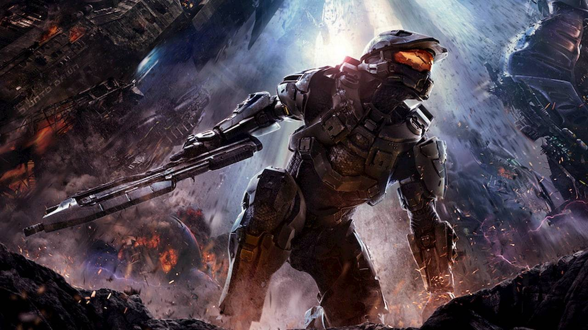

About Master Chief
He is earth's salvation against the Coventant.
Master Chief ready for battle.
More info about Master Chief
- Member of the Spartan II program
- Real name is John
- Spartan ID is 117
Master Chief's Friends
Master chief has been known to work with SGT Johnson and the Arbiter. Click to learn more